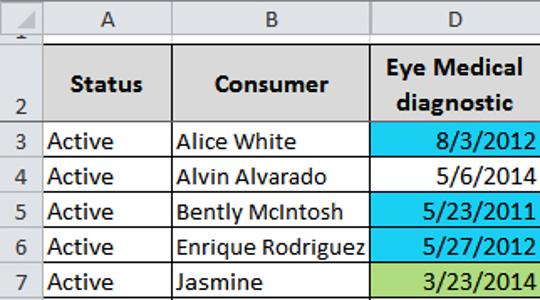
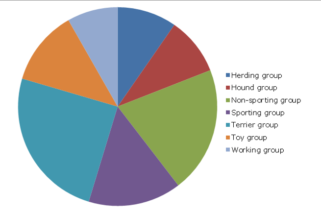
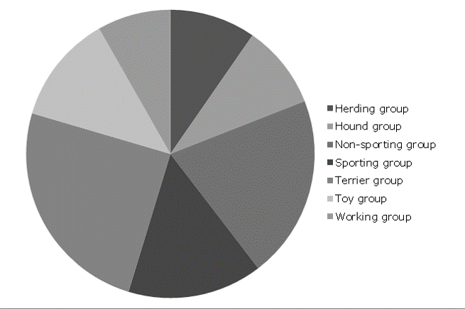
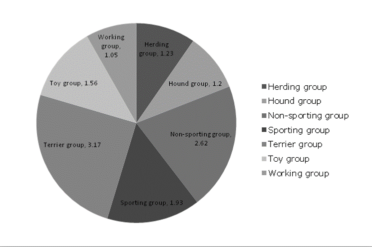
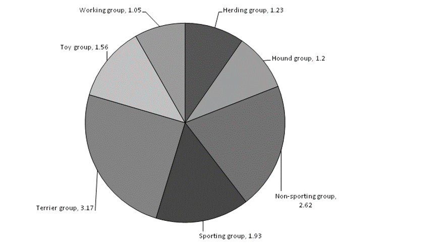
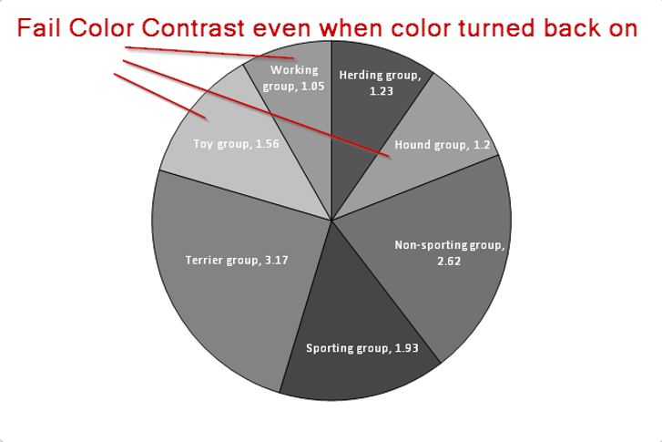
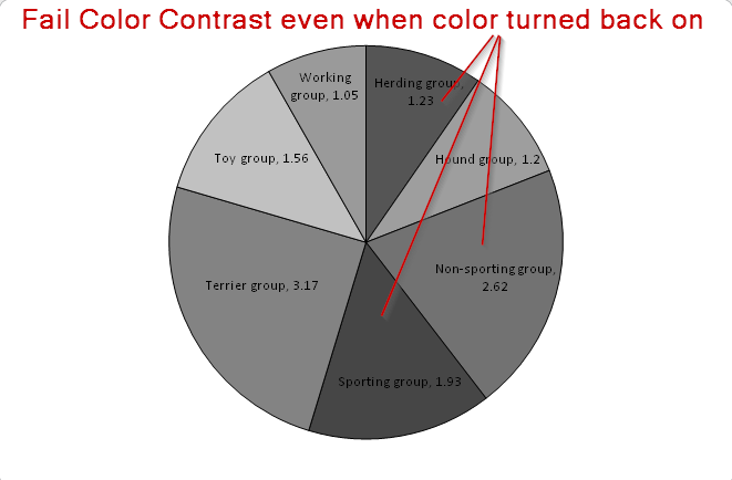

Accessible Excel 2010/2013/365

By Richard Steinberg
Accessibility Implementation Lead
Wells Fargo Digital Solutions for Business (DS4B)
(To view slides and speaker notes, press S key)
Introductions

Accessibility Considerations
- Keyboard Only
- Screen Magnification
- Use of Color
- Screen Reader Friendly
- Cognitive Load
Can You Spot the Differences?
Links below open files in MS Excel
| File Before Remediation | File After Remediation |
|---|---|
 |
 |
Before and After
What did you find?
- Unused rows and columns hidden
- Shading
- Named tabs
- Extra worksheet deleted
- Merged cells
- Wording changed
- Spacing changed
- Font changed
- White text--end of sheet
- Zoom level different
- Sheet named
How do JAWS and ZoomText
Announce Before and After?
Open Before and After Excel files with JAWS and ZoomText (one at a time with each assistive technology). What are the differences?
Spacing and Fonts
Optimize for users who use screen magnification.


How to Set the Default Font

Intro to Color Blindness


Pie Chart Examples


Pie Chart Examples


Pie Chart Examples

